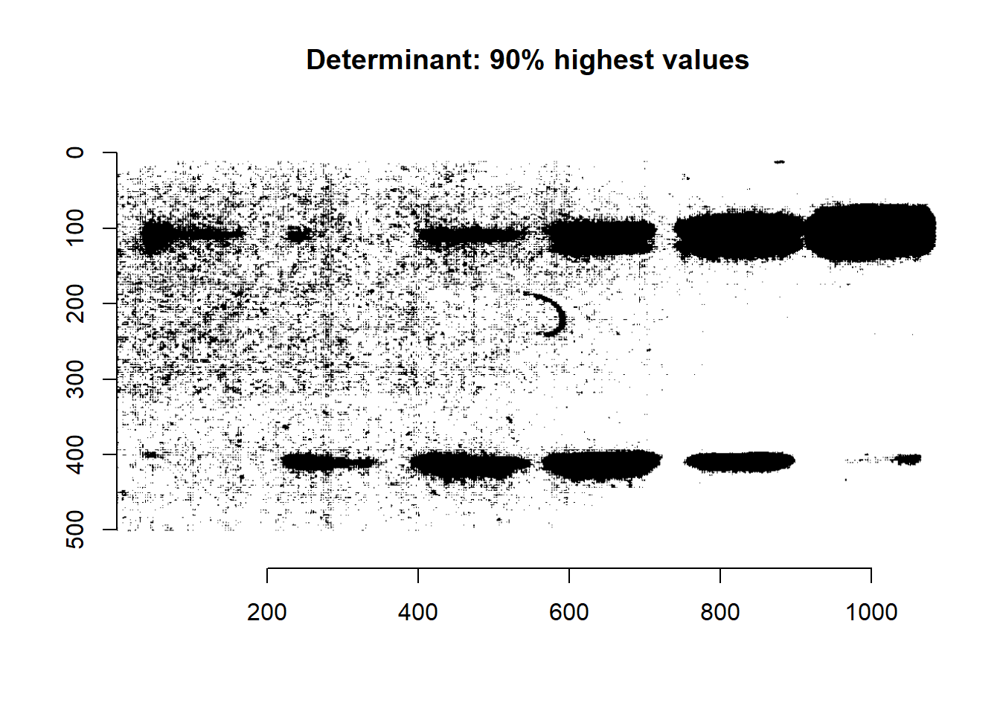
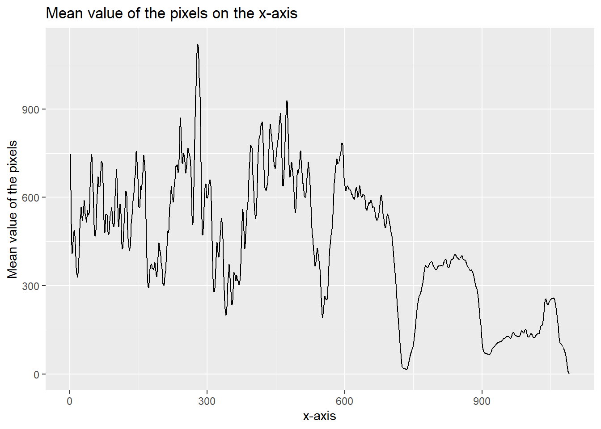

5 Western Blot analysis using Rstudio
5.1 Introduction
Western Blotting (WB) is a commonly used method in the biological scienes. This technique is used to investigate many features of the protein, ranging from basic protein analysis to disease detection such as cancer and HIV(Begum, Murugesan, and Tangutur 2022). Western Blotting involves three components to achieve this goal: (1) separating based on size, (2) transferring onto a solid surface, and (3) labeling the protein of interest with specific primary and secondary antibodies for visualization(Mahmood and Yang 2012). This results in a gel full of different proteins separated by size. Image J is often used to analyze the Western Blot results. The technique is highly sensitive and can be used to detect even small amounts of protein. It is often used in research into diseases such as cancer and HIV, where specific proteins can be used as markers for diagnosis and treatment. The next skill im gonna learn is to analyse Western Blots using Rstudio.
5.2 planning
The first thing I need to do is to read about Western blot analysis in Rstudio. We need to look if people made packages that will help us analyzing the gels and if they succeed. Most of the Western Blot analysis is done with Image J, which makes my search for R codes a bit more difficult.
- Find articles about photo analysis and Western blot analysis in Rstudio.
- Look for a way to obtain data about the pixels of photos .
- Try to run the code in the previous step on western blot gels.
- Visualize the data in a way the lanes are can be distinguished
5.3 Gel analysis and R
Not many people have used R to analysis their Western Blot gels. Most of the gel analysis are done with Image J or Python. The reason for that is because R is mostly used for statistical analytics, while Python has multiple purposes. For example data analysis or machine learning.
Even though it was (very) hard to find articles that contain both subjects, I found some packages and that might help me reach my goal. Note that these packages are not related to Western Blot analysis, but are made to analyse photo’s.
The packages that I found that could help me are “EBImage” and “imager”
5.3.1 Installation
To install the “EBImage” package we did the following:
# installation "EBImage"
if (!requireNamespace("BiocManager", quietly = TRUE))
install.packages("BiocManager")
BiocManager::install("EBImage")To install the “imager” package, we did the following:
# installation "imager"
devtools::install_github("asgr/imager")5.4 Getting started
To analize a Western Blot gel, we first need a photo. Because we’re testing if we can analize Western Blot gels with R, we’re using a photo with a high contrast and without any smear(s).
The photo we’re using is from an article “DNA Damage-Induced Phosphorylation of p53 ALleviates Inhibition by MDM2”
library(EBImage) # load in "EBImage" package
Image <- readImage('data/Westernblot_photo.png') #read in westernblot phot
display(Image) #display imageWe could manipulated the contrast to our liking. The contrast can be changed using the multiplication operator(*).
if the number after the multiplication operator is 1 > X, you’ll get a photo with a lower contrast. If the number after the multiplaction operator is 1 < X, you’ll get a phtot with a higher contrast. Note that if you’re using multiple photo’s for an analyse, you’ll need the set the same setting for every photo.
library(EBImage) #load in "EBImage" package
Image3 <- Image * 0.5 #set contrast to 0.5
Image4 <- Image * 1.1 #set contrast to 1.1
display(Image3); display(Image4) #display both images next to each other. The EBImage package has more functions we could use, like cropping, Gamma Correction and Color Management. Ebimage is a good and easy to use package to give your Western Blot the right colours and contrast.
5.5 Obtaining data
From now on, it gets a bit harder. A big difference between R and Image J when it comes to Western Blot photo’s, is that with Image J you could see which lane you’re working with and manually select the lane you wanted to analize. If a lane wasn’t imported for the analize, you could easly skip that lane. With R, we need to use the x-axis and y-axis of a photo while analyzing.
5.5.1 plotting the image and learning more about imager
To plot the image, we’re using the plot function of the imager package.
library(imager)
im <- load.image('data/Westernblot_photo.png')
plot(im)
The y-axis runs downwards, and the origin is located at the top-left corner, which is the conventional coordinate system for images. Imager consistently employs this coordinate system. the image data is classified as ‘cimg’.
class(im) #shows class of the photo## [1] "cimg" "imager_array" "numeric"im #will give information about the photo## Image. Width: 1091 pix Height: 502 pix Depth: 1 Colour channels: 4With imager, the photo is stored as a 4D numeric array. meaning the usual arithmetic operations works (for most of the time):
log(im)+3*sqrt(im)## Image. Width: 1091 pix Height: 502 pix Depth: 1 Colour channels: 4mean(im)## [1] 0.881701sd(im)## [1] 0.1327154The four dimensions are labelled x,y,z,c. We’ve already seen x and y in the plot. ‘z’ stands for the depth (and if we’re using videos also time) and ‘c’ stands for the colour. Imager will always use the x,y,z,c order.
A photo contains thousand of lines horzintal and vertical. Imager will scan the image beginning at the upper left corner (y=0), along the x-axis. When it’s done, it will move to the next line (y=1). It will repeat this proces until it’s done.
dim(im) #shows dimentions of the photo## [1] 1091 502 1 4We can see that our Western Blot photo has 1091 lines on the x-axis and 502 lines on the y-axis. Because we’re using a photo, z always be 1. If we used a video, z will increase. At lastly our photo has 4 colour chanels. We could also get these numbers individually.
width(im) #shows the width (x-axis)## [1] 1091height(im) #shows the height (y-axis)## [1] 502depth(im) #shows depth (z)## [1] 1spectrum(im) #shows colour chanels (c)## [1] 4Imager functions mostly use photo’s with 3 color channels. Our photo has 4 color channels. which means some function won’t work and you’ll get a warning.
We’ll change our photo to a black and white photo, which means that our photo from now on has 1 color channel
im_b <- imsplit(im,"c") %>% add #delete color from our photo
spectrum(im_b) #show color channels on our new photo## [1] 1library(ggplot2)#load in ggplot2
df <- grayscale(im_b) %>% as.data.frame #convert 'im' to gray scale, and then to a data frame## Warning in grayscale(im_b): Image appears to already be in grayscale modep <- ggplot(df,aes(x,y))+geom_raster(aes(fill=value)) #plot the photo
pWe’ve a plot! But unfortunately this one isn’t very useful. If you look at code one ting might out stand the rest, we made a data frame!
5.5.2 Images and data frames
Since we have our first data frame, we might take a look at it.
df %>% head(10) #look at the first 10 rows of the data frame## x y value
## 1 1 1 3.858824
## 2 2 1 3.870588
## 3 3 1 3.882353
## 4 4 1 3.870588
## 5 5 1 3.870588
## 6 6 1 3.894118
## 7 7 1 3.894118
## 8 8 1 3.882353
## 9 9 1 3.882353
## 10 10 1 3.894118The data frame contains 3 colomns. The first 2 give us the x-y coordinates. The third colomn gives us a value. The ‘value’ is the intensity of the pixel on that place, how darker the pixel, the higher the value. There are a few problems, this dataframe has 547,682 rows, which could be a lot to plot or even work with. And a bigger problem is that we don’t exactly know which values belong to which lanes and which straps. Luckily imager has something that might help.
We want to locate our straps in the gel. The webite of imager shows us how locate blobs, but we’re working with straps. So we have to change some codes a bit. First we’ll get the pixels with the highest values, we treshold the image.
threshold(im_b,"10%") %>% plot(main="Determinant: 90% highest values") #In this cases we used 10%, test for your own pictures what is best
As you can see the straps are now darker, and the background is lighter, but some straps aren’t as visible as before. And as you can see, there is some noice added. we’ll now label these straps.
lab <- threshold(im_b,"10%") %>% label
plot(lab,main="Labelled straps")There is still a lot of noise going around. We want to clear the photo a bit. To do this we use isoblur
library(imager)
nlab.denoised <- isoblur(lab,5)
plot(nlab.denoised)This is a lot better, even though our straps aren’t as clear anymore.
We now want to look for our straps. Imager want us to look for straps across scales, which means we’ll have to look for straps in different sizes. Unfortunately imager got updated a few times, what results in get.centers and llply not working. The reason for this is unknown. So we have to look for an other way.
5.6 Working with the created dataframe
While I was searching for articles, I saw a photo of a SDS-page gel with graphs on the x-axis and graphs on the y-axis(unfortnely I don’t have the source anymore). I tried different ways to recreate that image, but with my own data. After some time, I might found a solution to work with this big dataframe.
The first step is to group the x values and the y values, we do this with the group_by function.
library(dplyr) #load in dplyr package##
## Attaching package: 'dplyr'## The following object is masked from 'package:imager':
##
## where## The following object is masked from 'package:EBImage':
##
## combine## The following objects are masked from 'package:stats':
##
## filter, lag## The following objects are masked from 'package:base':
##
## intersect, setdiff, setequal, uniondata_of_x <- df %>% group_by(x) %>% summarize(mean_data = mean(value)) #group by 'x' and calculate the mean value
data_of_y <- df %>% group_by(y) %>% summarize(mean_data = mean(value)) #group by 'y' and calculate the mean valuedata_of_x %>% ggplot(aes(y = mean_data, x = x)) +
geom_line() +
labs(title = "Mean value of the pixels on the x-axis",
x = "x-axis",
y = "Mean value of the pixels")
data_of_y %>% ggplot(aes(y = mean_data, x = y)) +
geom_line() +
labs(title = "Mean value of the pixels on the y-axis",
x = "y-axis",
y = "Mean value of the pixels") To make the y-graph more understandble, we can flip the x- and y-axis with coord_flip
data_of_x %>% ggplot(aes(y = mean_data, x = x)) +
geom_line() +
labs(title = "Mean value of the pixels on the x-axis",
x = "x-axis",
y = "Mean value of the pixels")data_of_y %>% ggplot(aes(y = mean_data, x = y)) +
geom_line() +
coord_flip() +
labs(title = "Mean value of the pixels on the y-axis",
x = "y-axis",
y = "Mean value of the pixels") First we’ll look at the graph of the x-axis. If we imagine a rough line and make the tops more round, we can see 6 peaks. If look at the photo we used, we can see that there are 6 straps. We can now compare each strap to each other, but we have to keep in mind that there are two straps in one lane. If we just look at the graph, we can conclude for example that peak 4 (strap 4) has a higher intensity than peak 1 (strap 1), and if we compare this to the photo we used, this is true. Using the x-axis is great when you have a different lanes with just one strap.
Secondly we’ll look at the graph of the y-axis. As you can see there are two peaks, a big one and a small one. Because both peaks contain multiple lanes and therefor multiple straps, we cant really make a conclusion out of the graph. What we can conclude is that there ar two rows, and that the first row has a higher intensity than the second row.